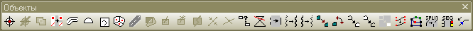

Мысли по поводу MapInfo Professional 10.0.1
- Вступление
- Инсталляция
- Первый запуск
- Что нового
- Использование программы
- Резюме
- Что дальше?
- Заключение
Вступление
Итак, цитата:
«С 28.12. 2009 г. доступна новая русская версия геоинформационной системы MapInfo Professional 10.0. Компания – производитель теперь носит название PitneyBowes Software Inc. (США). Изменился внешний вид программы, в частности, полностью переработан такой важный элемент, как управление слоями; расширены функции доступа к пространственным данным, хранящимся в базах данных; добавлены новые функции оформления карт, анализа, вывода результатов, а также многие другие возможности…»
Версию 10 с нетерпением ждали все пользователи MapInfo. Обещались всевозможные плюшки, небывалые улучшения и кардинальное изменение интерфейса. С жадностью, всматриваясь в рекламное видео, ждали, когда же появится русскоязычная локализация. И вот, в канун Нового Года, команда «ЭСТИ МАП» сделала пользователям роскошный подарок.
Теперь, по прошествии нескольких месяцев, можно подвести некоторые итоги. Что же представляет собой MapInfo Professional 10.0.1 и стоит ли бежать за обновлениями? Действительно ли изменения настолько глобальны и как это сказывается на работе? Попробую рассказать о своем опыте инсталляции и работы в MapInfo Professional 10.0.1 RUS. Сравнивать свои впечатления я буду с версией 8.5, так как последнюю, MI Pro 9.5, снес так же, как сейчас, по завершении статьи, снесу и «десятку».
Инсталляция
Внешний вид дистрибутива программы не изменился. Все тот же интегратор, все та же схема – «поставьте основной пакет, а потом накатите обновление пакета».
Нельзя сказать, что подобная схема вызывает положительные эмоции. Неизменная необходимость ставить обновления пусть и необременительна, но к 10 версии уже раздражает.
Следующий «приятный» момент преподносит требование доставить компоненты:
— microsoft office access database engine 2007 – драйверы подключения Office для разработчиков;
— microsoft .net framework 3.5 sp1 – программная технология от Microsoft, предназначенная для создания программ.

Не то чтобы я был идейным противником Framework’ов. И места на диске ничуть не жалко – хотя ненужная лично мне штука и весит 500Mb. Но… как-то неожиданно, знаете ли. Никогда не думал, что для работы в MapInfo может понадобиться такой сомнительный довесок.
После установки всех компонентов потребуется перезагрузка.
Примечательно, что теперь, при использовании триальной (30 дней) версии MapInfo, нет необходимости вводить серийный номер, а достаточно выбрать опцию «Ознакомительная версия».
Ну, и как я уже упоминал, после всех автоматических установок придется лично зайти в каталог Update и вручную запустить установку обновления.
Первый запуск
Запуск, надо заметить, более долгий, нежели ранее. И поправку на проверку лицензионности я делаю. Все равно – стартует MapInfo 10.0.1 ощутимо медленнее. Уп-с…
И – вот оно! Первое чувство от взгляда на обновленную MapInfo, не побоюсь признаться – ошеломление. Судите сами:
Интеграция MapCad (подробнее о том, что это – здесь)

Меню «Объекты»
Что нового?
Все Панели наконец-таки «плавающие», их можно прикрепить к любой части экрана. Окно «Управления слоями» сделано «доковым», a-la Corel etc. Его можно свернуть, и развернуть, прикрепить в край рабочего поля!
В окне «Управления слоями» выведены стили оформления объектов, переделаны и окна настройки отображения проектов:
Изменился и вид пунктов меню:
Добавилась много новых настроек отображения и, что замечательно – прозрачность объектов. Более того, она работает!
Появилась довольна интересная утилита «Шаблоны отчетов», которая призвана облегчить оформление отчетов MapInfo.
Обо всех новинках программы можно почитать на сайте «ЭСТИ МАП».
Использование программы
А вот здесь и начались неприятности.
Прежде всего, как выяснилось, великолепные «плавающие панели» MapCad не запоминают свое расположение – как и было всегда у MapInfo для внешних утилит. Таким образом, громкие слова об «интеграции», очевидно, означают только включение MapCad в автоматическую установку. Мелочь, безусловно, мелочь.
Окно управления также не хочет восстанавливаться при перезапуске программы. Правда, оно хоть сохраняет свое положение, т.е. будучи прилеплено, к примеру, к правому краю, повторно откроется именно там.
Локализация программы выполнена неожиданно (для Эсти и для меня) коряво. Судите сами:
Первый раз, признаться, я даже не рискнул нажать кнопку «Удалить». Хотя я понимаю, что имел в виду переводчик, но в версии ниже тот же диалог выглядит вот так:
Пресловутый «Виртуальный принтер PDF Version 10.0» предпочитает общаться на английском и периодически подвисает.
Я неоднократно переводил программы и знаю, с какими трудностями сталкивается переводчик, пытаясь впихнуть русский аналог на место короткой английской фразы. Я не осуждаю команду «ЭСТИ МАП» (или кто там на этот раз локализовывал) за съехавшие кнопки, рваные подписи и общее ощущение недоделанности. Но! Раньше же этого не было? Почему теперь появилось?
Кстати, о недоделанности. Изменения интерфейса, о которых я выше рассказал, на этом и заканчиваются. Остальные окна остались прежними. Может быть, это и хорошо – обеспечивается некая преемственность версий. Однако, такое сочетание «старого» и «нового» ничего, лично у меня, кроме эстетического недоумения, не вызывает.
Дальше – больше. Пытаюсь открыть файл, созданный в 8.5 и получаю вот такое милое сообщение:
Как известно, невозможность работы с «чужими» индексами – отличительная черта локализованных версий MapInfo. Т.е. индексы, созданные в английской версии, не будут читаться в русской и наоборот. Но! Тестируемый файл создавался как раз таки в русской! И в русской же версии открывался.
Разница между переводом программы и ее локализацией небольшая, но все же есть. Рекомендую – вот здесь.
Замечательная программа Александра Булгакова InfoTool, позволяющая удобно править семантику таблиц, на MI10 не пошла:
Вернее, не то что бы не пошла, а – через раз. То потухнет, то погаснет. Вопросительно, не правда ли? На всех версиях все было корректно, а тут… Возможно, конечно, это Александр что-то «нахимичил» или недодумал. Правда, в это верится меньше, чем в то, что переход на .NET прошел без потерь и косяков.
Про неработающий miCad от прошлых версий я даже не говорю – это вообще классика жанра.
Резюме
Программа была поставлена рядом со старой, надежной и проверенной MapInfo 8.5. Предполагалось, что пару дней привыкания к ее бледно-попугайскому интерфейсу будет достаточно, чтобы перейти на нее полностью. Прошел месяц.
Программу использовали активно в первый день, менее активно во второй и третий, совсем не использовали во вторую неделю и попросили снести к концу третьей.
Что дальше?
Что это было? Пользователи MapInfo уже давно привыкли к скупым обновлениям, аскетичному неменяющемуся интерфейсу, убогости встроенного инструментария и категорическому нежеланию разработчика что-либо в вышеперечисленном менять. Обновленная MI вызывает легкое чувство недоумения и обиды. Если бы эти изменения появились лет этак 5 назад, мы бы все бросали чепчики и кричали «MapInfo forever». В конце же 2009 года выпустить такую невнятную вещь – это, по сути, расписаться в собственной некомпетентности. А вот в это – в некомпетентность если уж не программистов, то хотя бы менеджеров Pitney Bowes – верится с исключительным трудом.
Как мне представляется, разгадка кроется именно в факте перехода на технологию .Net.
Почему программисты не начинают, а именно – переходят на другие (а уж тем более такие современные и продвигаемые, как .Net) технологии? Если не требуется полностью переписать ядро по техническим соображениям, то зачем его переписывать? Причин, по сути, три. Первая – проста и понятна – прямой приказ ничего не понимающего в программировании руководства, которое что-то где-то прочитало или услышало. Вторая – более серьезная – полная смена команды программистов. И третья, самая интересная – смена концепции.
Сразу оговорюсь, во избежание недоразумений – я излагаю только свои мысли, ничем и никем не подкрепленные.
Первую версию отбросим как недоказанную, во второй усомнимся – информации об этом, кроме давнего ухода Andrew Dressel, вроде не было. А вот последняя версия выглядит очень даже правдоподобно.
На сайте производителя MapInfo – компании PitneyBowes Software Inc. для того, чтобы найти программу, придется довольно долго бродить по меню. Сайт вообще представляет не ГИС MapInfo, а саму компанию. И – предоставляемые ею услуги. В числе которых – ГИС. Одна из многих. А вот связка MapX–MapXtreme–MapBasic – уникальна. Позволяет, кстати, продавать не только сами программы, но и сервис – построение, как вариант, корпоративной ГИС и ее обслуживание.
Упор на услуги, технологии, решения на сайте очевиден. Что понятно. Продажа услуги более выгодна, чем продажа продукта. И очевидно, что переход на Net-программирование – внятный, хорошо продуманный ход, делающий тот же MapX более привлекательным на рынке разработчиков. А на конечную ГИС в PB если и не махнули рукой, то относятся уже явно как к продукту вторичному, основного интереса не представляющему. Для клиентов PitneyBowes это, безусловно, хорошо. Для пользователей MapInfo Professional, боюсь, не очень.
И в заключение
Возможно, я заблуждаюсь и все неверно понял. Возможно, все не так и через пару месяцев придет версия MapInfo 10.5 или 11.0, в которой будут исправлены все ошибки и не наделаны новые. Может быть. Но я – пока что останусь на старой, надежной, проверенной MapInfo Professional 8.5
UPD
По любезному разрешению хозяев форума www.map-info.ru открыто обсуждение статьи и, собственно, сабжа.
Ветка обсуждения: http://map-info.ru/phpBB2/viewtopic.php?t=1362.